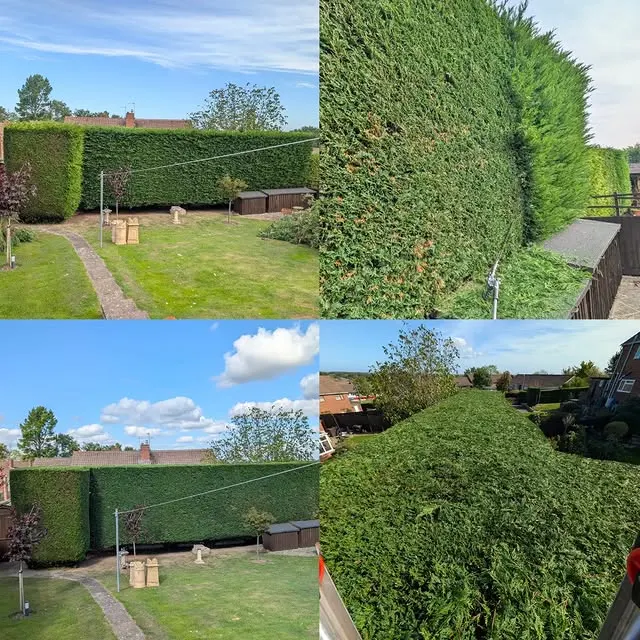
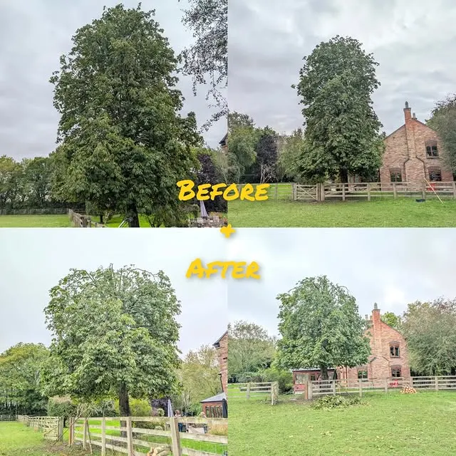
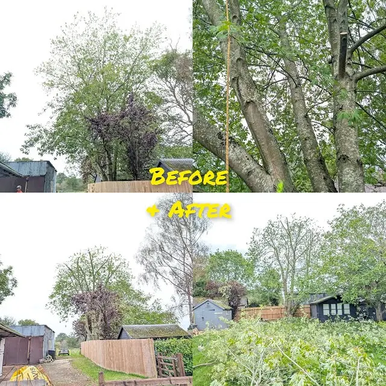
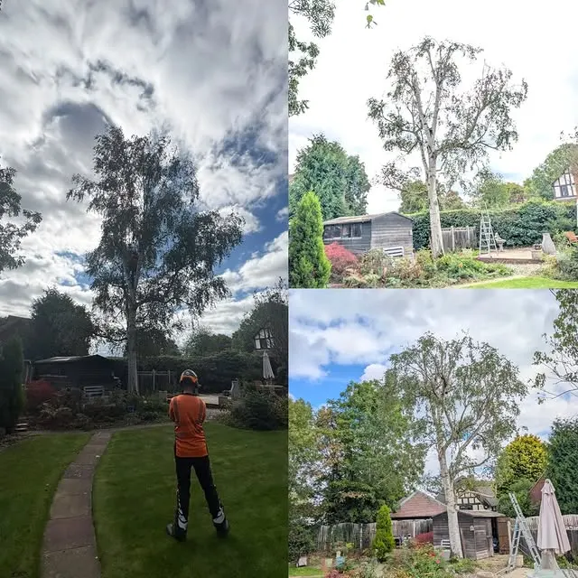
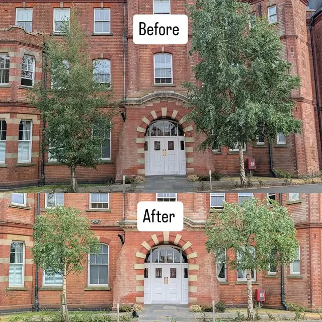
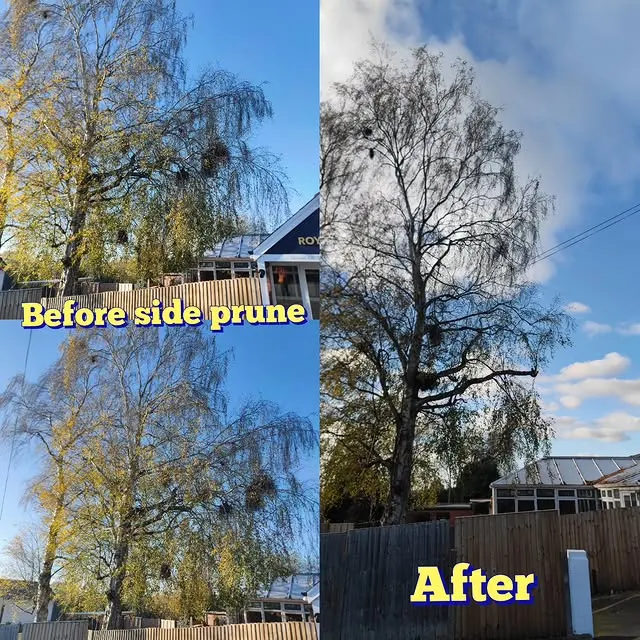

Malvern area · Tree surgeons
Careful tree work, done properly.
Hedge work, crown reductions and pruning — the kind of steady, skilled tree care that shows up in the finished garden, not just in the canopy.

Tree work Lobo does
Each service below comes from a job Lobo posted themselves.
Hedge work
Neat, full-height hedge jobs — including a hedge job completed in Malvern, shown in four views.
Crown reductions
Top reductions and measured reductions, such as a 20% reduction and thin on a silver maple, finished before the rain.
Pruning
Birch pruning and reductions cut back to historic points, with care for trees that were over-cut before.
Trees over buildings
Reducing the side of a silver birch so it stops overhanging the conservatory.
Recent work
Photos and captions from Lobo Tree Care’s own Instagram posts.





Malvern, and the gardens around it
Lobo’s hedge job was completed in Malvern, and the reduction and pruning jobs are the same kind of residential tree work — trees in real gardens, finished tidily.
Got a tree that needs attention?
Find Lobo Tree Care on Instagram and message them about your tree.